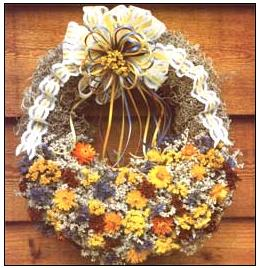

STEP 4: Take a fifth bulb, lay it on top and parallel to bulb number 2 (the other of the original crossing bulbs). STEP 5: Braid bulbs 2 and 5 up and over into the middle. STEP 6: Take a sixth bulb, and place it so its head sits just under the head of bul